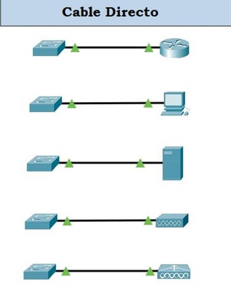
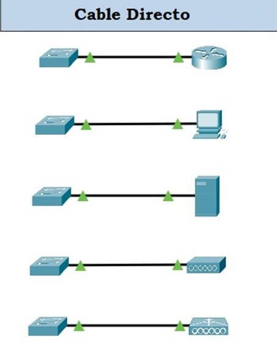
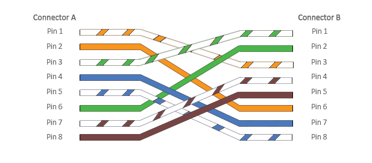
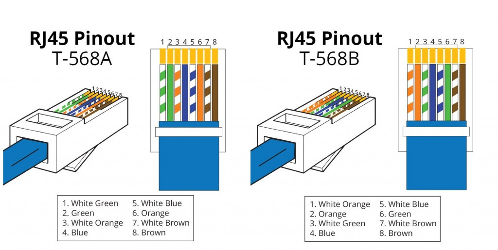
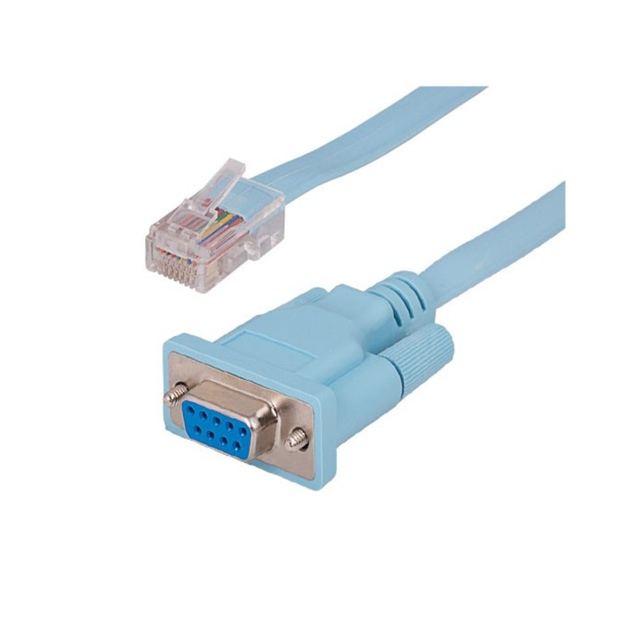
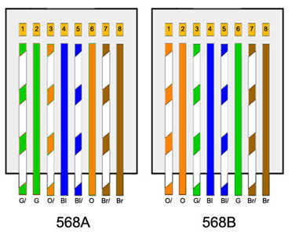
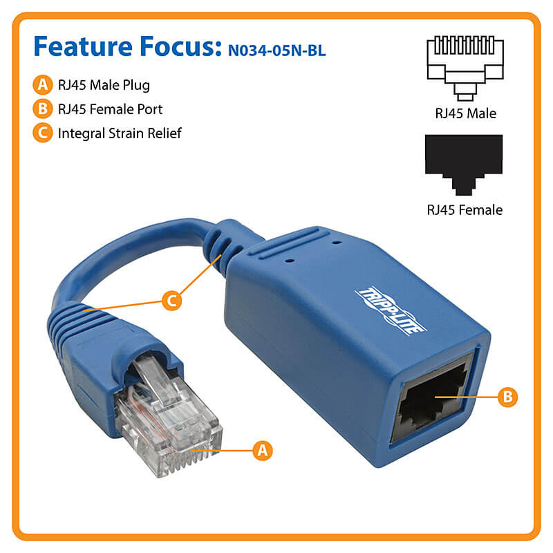

Un cable directo (también llamado normal o straight-throug) hace uso de los pares 2 y 3. Para producir un cable de conexión directa (cable que utiliza la misma disposición de las clavijas en ambos lados), en los extremos puede utilizar el estándar TIA/EIA T568A o el estándar TIA/EIA T568B (por lo general este). Un cable directo se utiliza para conectar equipos como, por ejemplo, PC, servidor, router a un switch, hub o puente/bridge.
 

Un cable cruzado (también llamado crossover) se utiliza para las conexiones de Hub con Hub, de un ordenador a otro, de Switch a Switch, o entre el equipo de la misma capa de acuerdo a la modelo OSI. Actualmente, todos los equipos Gigabit Ethernet y la mayoría de los nuevos dispositivos ya es compatible con Auto MDI-X (Auto Medium Dependent Interface Crossover), y por lo tanto no existe la necesidad de hacer un cable cruzado para la comunicación entre los equipos que operan en la misma capa del modelo OSI (por ejemplo, de PC a PC). Los cables cruzados se crean con una de las puntas con un esquema T568A y la otra punta con un esquema T568B (es decir, se intercambian los cables 1 con el 3 y el 2 con el 6), en el que cada uno de ellos tendrá dos pares para transmisión (TX) y dos pares para recepción (RX).


Un cable consola o invertido, tal como el nombre sugiere, las terminaciones inversas, o sea, el pin 1 de un conector RJ-45 conecta con el pin 8 del otro. El 2 se conecta al 7 y lo mismo sucede con los otros. Este tipo de cable se utiliza para conectarnos, por ejemplo, a un router o switch a través de la línea de consola.


